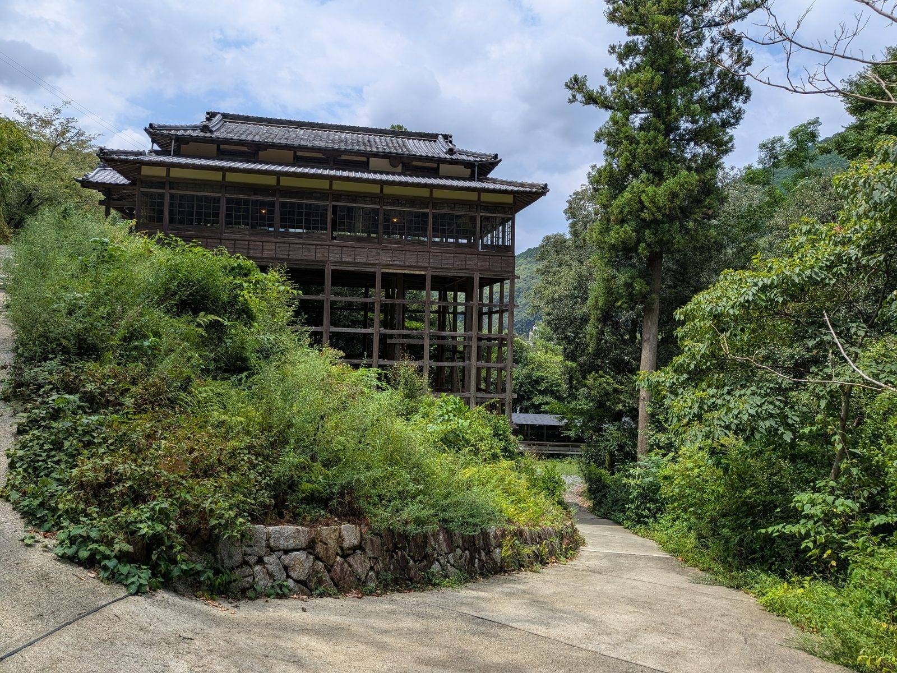

2026/08/16 ・ 大洲の視点 ・ 出典: 少彦名神社とおすくな社中(公式サイト)、大洲市ホームページ、大洲市公式観光情報VisitOzu
少彦名神社、大洲市菅田町にある知る人ぞ知る神社

出典・参考にした資料
少彦名神社とおすくな社中(公式サイト) 少彦名神社参籠殿｜大洲市指定文化財(大洲市ホームページ) 少彦名神社｜大洲市公式観光情報VisitOzu ユネスコアジア太平洋文化遺産保全賞について（文部科学省） 役場庁舎がユネスコのアジア太平洋遺産賞を受賞（千葉県大多喜町、比較用）大洲市菅田町に、少彦名神社という神社がある。
正直、地元でもそこまで知られていない神社だと思う。でも調べてみたら、かなり面白い神社だった。
祭神は「神様が亡くなった場所」に祀られている
祭神は少彦名命(すくなひこなのみこと)。「おすくな様」と呼ばれ親しまれているそうだ。
『出雲国風土記』にも登場する神様らしい。大国主命と一緒に国造りをしたと伝わる、格式の高い 神様なんだそうだ。
面白いのは、ここが「神様が亡くなった場所」だという言い伝え。
少彦名命は道後温泉を発見したあと、肱川沿いを南下していたという。その途中、深みにはまって 命を落とし、この地に葬られたと伝わっている。
全国でも珍しい「神様終焉の地」なんだそうだ。神様が祀られている場所ではなく、神様が亡くなった 場所そのもの、というのが独特だと思う。
医薬の神様に、薬になる木を供えている
少彦名命は、医薬・温泉・産業を司る神様でもある。
だからなのか、境内には「薬草・薬木園」という一角があった。案内板には、2015年3月に 「目薬の木」が10本植えられたと書いてある。
医薬の神様に、ちゃんと薬になる木を供えているのが律儀だと思う。
記録に残る最初は1441年。今の姿は昭和から
歴史も古い。記録に残る最初の出来事は1441年、宇都宮次郎太郎という人物が「少比古廟」という 扁額を奉納したことだそうだ。
1583年には、正岡宮内大輔によって再興されたと伝わっている。
今の姿に近づいたのは昭和に入ってから。1928年に奉賛会が設立され、1931年から神殿・拝殿・ 社務所などの造営が始まった。
神殿は1932年に完成。そして1934年、「参籠殿」が竣工した。
崖にせり出す「懸造り」。支える脚は最長8.3メートル
この参籠殿こそ、少彦名神社で一番の見どころだと思う。
参道沿いの北斜面に建てられていて、床面積の約9割が山の崖にせり出す「懸造り」という構造に なっている。迫り出した部分を支える脚の長さは、最長で8.3メートルにもなるらしい。
伝統的な「貫工法」という組み方と、近代的な金属ボルトを組み合わせて建てられているそうだ。 上の階はガラス戸が3面に巡らされていて、開放的な造りになっている。
この建物、老朽化で一時は使えなくなっていたそうだが、多くの寄付によって2014年に修復された。 今は結婚披露宴や研修会にも使われているという。
地元有志の保存活動が、国際的に評価された
そして2016年5月30日、参籠殿は大洲市指定文化財に指定された。
同じ2016年の9月には、この修復活動がユネスコのアジア太平洋文化遺産保全賞で最優秀賞を 受賞している。
それだけではない。2013年には、ワールドモニュメント財団の「2014年World Monuments Watch (文化遺産ウォッチ)」にも選ばれていた。
一地域の神社の建物が、国際的な文化遺産の枠組みで評価されているというのは、正直かなり 意外だった。
地元の人たちが「おすくな社中」という団体を作り、2002年からコツコツ保存活動を続けてきた 成果なんだと思う。
ちなみに、菅田町には同じ「少彦名神社」という名前の神社が、もう一つあるらしい。
春の大祭は4月15日、秋の例大祭は10月15日。境内は無料で終日開放されていて、土日祝日は ボランティアガイドもいるそうだ。
神社としての知名度はそう高くないかもしれない。でも、由緒や建築、受賞歴まで含めると、 大洲の中でもかなり濃い場所だと思う。
この賞は、どれくらいのものなのか
「ユネスコの最優秀賞」と言われてもピンとこなかったので、この賞そのものを調べてみた。
正式には「ユネスコ アジア太平洋文化遺産保全賞」。文部科学省の説明によると、アジア太平洋地域における歴史的建造物の保全について、民間主導の優れた取り組みを顕彰する賞だ。行政ではなく民間の努力を評価する、という性格が強い。
同じ賞を受けた日本の建物を探すと、横浜赤レンガ倉庫や、千葉県大多喜町の役場庁舎などが出てくる。全国区で名前の知られた建物と、同じ枠組みで評価されたことになる。
しかも大洲の場合、受賞したのは建物そのものというより「地元有志が寄付を集めて修復した」という活動のほうだった。おすくな社中が2002年から積み上げてきた活動が、崖にせり出す木造建築を残したうえで、国際的な評価まで引き寄せたということになる。